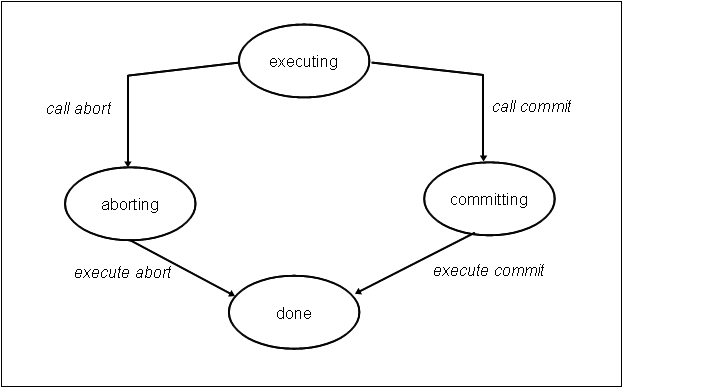
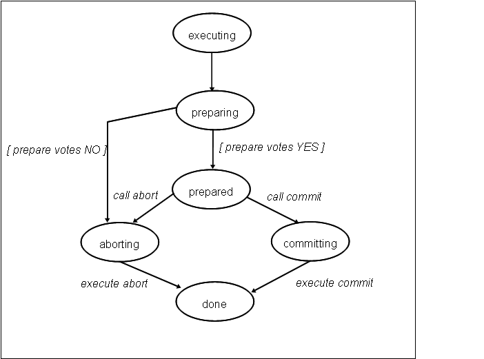
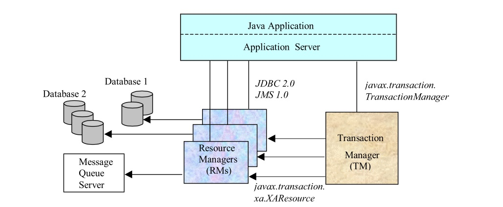
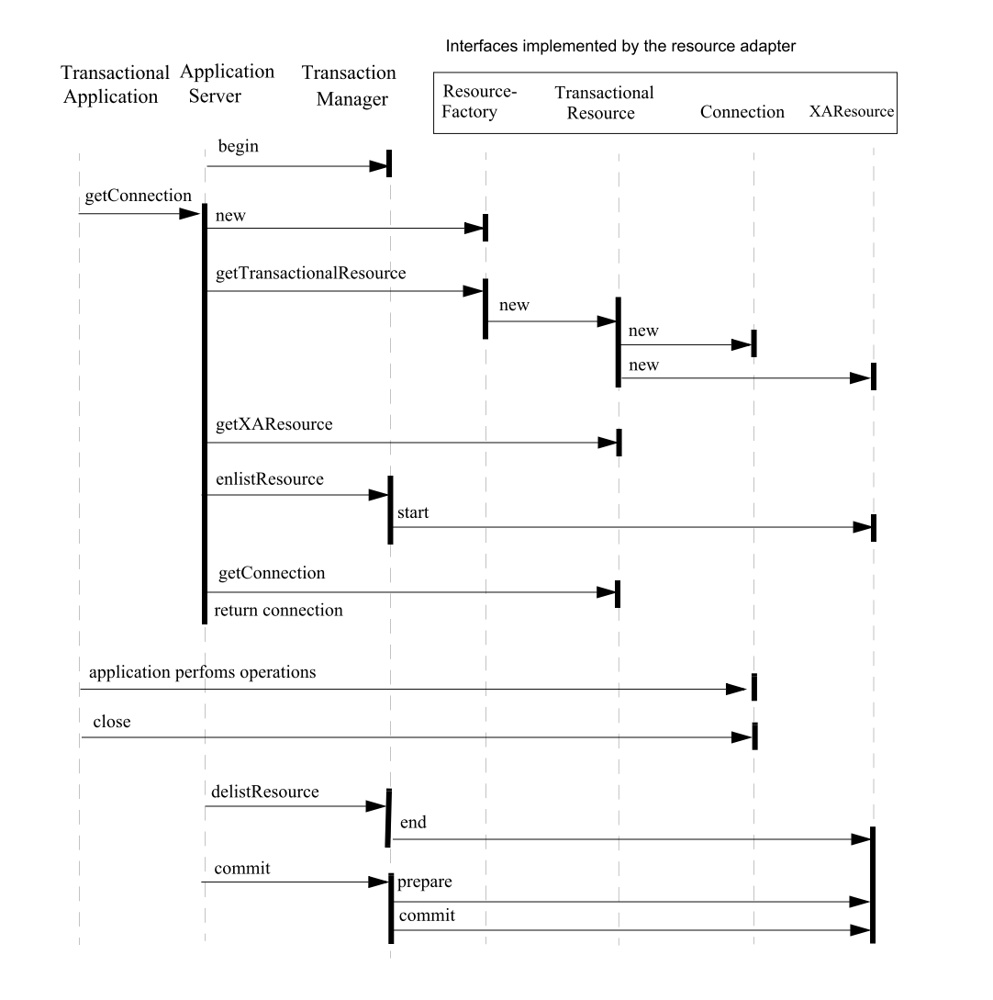
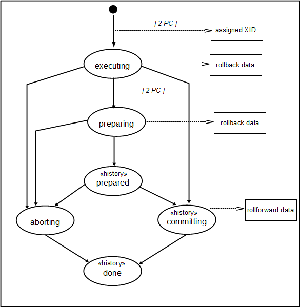

Transaktionen sind in der aktuellen Datenverarbeitung gängige Praxis. Jede Verarbeitung auf relationalen Datenbanken nutzt notwendigerweise Transaktionen. Programmiermodelle wie JEE und Spring bieten für transaktionale Nutzung von Datenbanken weitgehende Unterstützung, so dass das zu grundeliegende Programmiermodell für die Anwendung keine große Rolle spielt.
Kenntnisse an die Anforderungen an eine Datenbank, an einer Transaktion teilzunehmen, sind i.d.R. nicht notwendig. Vielleicht haben Sie sich mit Konzepten wie isolation level oder locking strategies beschäftigt. Diese Kenntnisse helfen, Datenbanken als Teilnehmer einer Transaktion besser zu verstehen, denn sie ergeben sich unmittelbar aus den Anforderungen, die Transaktionen an Datenbanken stellen. Glücklicherweise sind die Konzepte durch die Datenbankhersteller gelöst.
Sollen allerdings Persistenzsysteme, welche Transktionen nicht unterstützen (wie z.B. Dateien, Filesysteme oder Archivsysteme), an Transaktionen teilnehmen, so muss man sich mit diesen Anforderungen im einzelnen beschäftigen.
Das Projekt Phynixx bietet die Möglichkeit, Persistenzsysteme ohne Transaktionsunterstützung, so zu erweitern, dass diese an Transaktionen teilnehmen können. Phynixx bietet die notwendigen Werkzeuge, diese Systeme an das transaktionale Programmiermodell anzupassen. Phynixx arbeitet im Javaumfeld, so dass die Anpassung für das transaktionale Programmiermodell in Java gilt.
Im ersten Teil dieses Dokuments werden die notwendigen Definitionen und Konzepte des transaktionalen Programmiermodells in Java erläutert. Im zweiten Teil wird untersucht, welche Auswirkungen die Anforderungen auf das zu unterstützende Persistenzsystem haben und wie Phynixx dort unterstützen kann.
Eine konkrete Umsetzung der Konzepte mit Phynixx wird anhand des Beispiels des sequentiellen Schreibens in eine Datei im Tutorial (siehe Tutorial) vorgestellt.
Um Konzepte zu verstehen, bietet es sich an, Datenbanksysteme als prototypische Teilnehmer an einer Transaktion im Hinterkopf zu halten. Sie werden alle hier vorgestellten Konzepte dort wiederfinden.
Transaktionen - grundlegende Konzepte
Eine Transaktion ist eine Verarbeitung von Daten, die als primäres Ziel hat, die Korrektheit der Daten jedes der beteiligten System zu gewährleisten.
Eine Transaktion ist ein lediglich eine programmatische Klammer für Änderungen, welche an Systemen wie Datenbanken, Messagequeues o.ä. vorgenommen werden.
Das klassische Beispiel einer Transaktion ist die Überweisung zwischen Konten unterschiedlicher Banken. Die Wertstellungen der beiden Konten müssen entweder beide stattfinden oder beide nicht.
Innerhalb einer Transaktionen können mehrere Überweisungen getätigt werden. Entweder sollen diese insgesamt oder gar nicht wertgestellt werden.
Relationale Datenbanksysteme sind am häufigsten als teilnehmende Systeme/Ressourcen in Transaktionen zu finden. Im Javaumfeld sind aber auch andere Ressourcen wie JMS zu finden.
Neben diesen beiden Systemen existiert im Javaumfeld wenig Unterstützung für andere Ressourcen, die sich an Transaktionen beteiligen möchten. Dazu gehören Dateien, Filesysteme, Archivsysteme und andere Persistenzsysteme.
Eigenschaften einer Transaktion - ACID
Um dem Ziel der Korrektheit gerecht zu werden, unterstützen Transaktionen Eigenschaften, welche mit dem bekannten Akronym ACID beschrieben werden.
Atomicity
Für alle beteiligten Ressourcen werden entweder alle (commit) oder keine der Veränderungen durchgeführt (rollback). Die Veränderungen innerhalb einer Transaktion kommen entweder ganz oder gar nicht zum Tragen.
Dieser Ansatz setzt voraus, dass jede Ressource ihre eigenen Änderungen innerhalb der Transaktion protokolliert. Eine Ressource, die in eine Transaktion involiert ist, besitzt daher einen transaktionalen Zustand (transactional state). Dieser transaktionale Zustand beschreibt die Menge an Änderungen, welche einem commit/rollback unterliegen. Die Art und Weise, wie eine Resource die Änderungen protokolliert, bleibt ihr überlassen. Entscheidend ist, dass im Fall eines commit alle Änderungen durchgeführt werden, bzw. im Fall eines rollback keine der Änderungen aktiv wird.
Consistency
Konsistenz ist eine Anforderungen an die fachliche Logik, die innerhalb einer Transaktion umgesetzt wird, und nicht eine Anforderung an die Transaktion selbst. Transaktionen wissen nichts über die Sematik der Änderungen.
Konsistenz bleibt daher immer Aufgabe der Programmlogik.
Isolation
Zwischenzeitliche Änderungen an der Resource innerhalb der Transaktion sind nur in der Transaktion sichtbar. Relationale Datenbanken bieten i.d.R. unterschiedliche Level von Isolation an ( siehe http://www.oracle.com/technetwork/issue-archive/2010/10-jan/o65asktom-082389.html) , die teilweise lesenden Zugriff auf innerhalb einer anderen Transaktion veränderter Daten zulassen. Mindestens muss aber der Grad an Isolation sicherstellen, dass die Daten, die in einer Transaktion geändert werden, nicht gleichzeitig durch eine andere Transaktion geändert werden können.
Diese Forderung der Isolation wird i.d.R. (zumindest bei vielen Datenbanken, JMS) durch ein pessimistisches Sperrkonzept (locking) umgesetzt. Wird eine Ressource innerhalb Transaktion verändert, so muss diese gegenüber allen anderen Transaktion gegen Änderungen geschützt werden. Dies geschieht, indem sie vor der Änderung gesperrt wird. Pessimistische Sperren müssen vor dem ersten Zugriff auf die zu verändernden Daten gesetzt werden. Als Konsequenz ergibt sich die Gefahr von Deadlocks ( - gegenseitiges Warten unterschiedlicher Transaktionen auf die Aufhebung einer Sperre) und sie können unter ungünstigen Voraussetzungen die Parallelsierung der Verarbeitung stark einschränken.
Insbesondere müssen alle Transaktionen diese Ressource und ihren alle konkurrierend zu verändernden Daten kennen. Dies setzt voraus, dass die Ressource auf einem gemeinsamen, für alle Transaktionen (und damit deren ausführende Prozesse) sichtbaren Datenbestand operiert. Dieser zentralistische Ansatz ist in Zeiten von Big Data nicht immer einzuhalten. Nach dem CAP-Theorem (siehe http://www.allthingsdistributed.com/2007/12/eventually_consistent.html) bedingt dieser Ansatz Abstriche bei der Parallelisierung. Es ist also nicht immer dieses starke Maß an Konsistenz wünschenswert.
Durability
Aus Datenbanken ist bekannt, dass die Änderungen am Datenbestand persistiert werden und nach der erfolgreichen Transaktion außerhalb des verändernden Prozesses bekannt sind. Diese Forderung ist bei den bekannten transaktionalen Ressourcen wie Datenbanken und JMS gegeben.
Es lassen sich aber auch Szenarien von Transaktionen und Ressourcen vorstellen, in denen die Dauerhaftigkeit der Daten keine Rolle spielt. Z.B. spielt die Kopplung des command pattern mit Transaktionen und Persistenzsystemen eine große Rolle, um die Konsistenz von Anwendungen sicherzustellen. Die commands des command pattern werden nicht dauerhaft gespeichert. Daher eignen sich leichtgewichtigere Ansätze, um command pattern in Transaktionen einzubetten.
Lokale Transaktionen
Die Verbindung einer Ressourcen zu einer Transaktion wird i.d.R. als connection oder physical connection bezeichnet. *Connection*s stellen die Schnittstelle zur Semantik der Ressource dar. Z.B. beschreibt javax.sql.Connection eine Connection zu einer relationalen Datenbank einschließlich eines Zugriffsinterface auf eine Datenbankverbindung. Es werden SQL-Statements abgesetzt oder Stored-procedures aufgerufen. Dieses Interface ist für den Zugriff auf die Datenbankverbindung spezifisch. Im allgemeinen ist die Struktur und Schnittstelle einer Connection ist nicht standardisiert ist, sondern obliegt der Implementierung der Ressource.
Aus der Atomicity ergibt sich, dass eine Ressource ihren transaktionalen Zustand während der Transaktion protokollieren und verwalteten muss (transactional state). Die verantwortlichkeit für den transactional state ist alle Typen von connections gemeinsam.
connections bieten die Methoden commit/rollback-Methoden (oder semantisch vergleichbare Methoden), mittels der die Änderungen des transactional state bestätigt oder verworfen werden.
Falls sich die Anwendung mit einer einzelnen Ressource verbindet, dort Änderungen vornimmt und diese dann mittels commit bestätigt oder mit rollback verwirft, so spricht man von einer lokalen Transaktion.
commit/rollback werden direkt auf dieser Ressource durchgeführt (z.B. Datenbank-Connection) und es bedarf keiner übergeordneten Koordination der Transaktion, denn es ist nur eine Partei involviert.
Abbildung 1 zeigt die möglichen Zustandsübergänge einer lokalen Transaktion.

Abbildung 1: Zustandsübergänge bei einer lokalen Transaktion (nach gupta-1997 Kap 3.2.1)
JTA Transaktionen
Nehmen mehr als eine Ressource an der Transaktion teil, so reicht ein einfaches rollback/commit-Protokoll nicht mehr aus, sondern die Ressourcen müssen koordiniert werden.
Die Koordination umfasst folgenden Aufgaben:
- Informierung aller Ressourcen über anstehendes commit/rollback.
- Koordination des rollback/commit der einzelnen Ressourcen untereinander.
- Verfahren zur Auflösung von Konflikten während commit/rollback zwischen den einzelnen Ressourcen.
- Recovery-Verfahren, wenn während rollback/commit Fehler aufgetreten sind (siehe unten).
Insbesondere muss der Konflikt gelöst werden, dass eine Ressource bei der Durchführung ihres commits Probleme feststellt und auf ein rollback schwenken muss. Was passiert mit den anderen Ressourcen, welche im schlimmsten Fall bereits ihr commit durchgeführt haben?
Diese Koordination wird durch einen Transaction Manager durchgeführt. Im Javaumfeld werden die Anforderungen an einen solchen Transaction Manager durch die Spezifikation JTA (Java Transaction API) JTA definiert.
Dazu dient das 2 Phase Commit-Protokoll. Während der Phase, in der auf der Connection Anwendungslogik ausgeführt wird und während des rollbacks unterscheidet sich das 2 Phase Commit-Protokoll nicht vom Single Phase Commit-Protokoll, wie es bei lokalen Transaktionen vorgestellt wurde.
Das Commit verläuft dagegen in zwei Phasen. In der Phase prepare wird die Connection von Transaktionsmanager gebeten, ein Commit vorzubereiten. Zu diesem Zeitpunkt kann die Ressource gegen ein Commit votieren und damit die gesamte Transaktion abbrechen lassen. Haben alle Ressourcen einem commit zugestimmt, so gibt es kein Zurück und in der nächsten Phase fordert der Transaktionsmanager alle Ressourcen auf, ein commit auszuführen.
Dieses ist für Java-Ressourcen in JTA 1.2 beschrieben. JTA basiert auf diesem auch als XA-Protokoll bezeichneten 2 phase commit protocol (2PC), welche in XA spezifiziert ist.
Befinden sich der transaction manager und die beteiligten Ressource nicht in einem gemeinsamen Prozeß, sondern sind auf unterschiedliche Prozesse/Knoten aufgeteilt, so gilt die Transaktion als verteilt (distributed transaction processing DTP). Dieses Szenario stellt größere Anforderungen an den transaction manager, die einzelnen Ressourcen zu koordinieren. Da dieses Szenario keinerlei Auswirkungenn auf die beteiligten Ressourcen hat und Phynixx sich mit der Unterstützung dieser Ressourcen beschäftigt, gehen wir nicht näher auf verteilte Transaktionen ein.
Zustandsübergänge einer TA-gesicherten Resource
In gupta-1997 Kap 3.2.1 sind die Zustandsübergänge einer transaktionsgesicherten Ressource in einem 2 phase commit-Protokoll beschrieben. (Abort(-ing) entspricht dem gängigeren rollback(-ing).)
Bzgl. des 1 phase commit protocols lassen diese wie in Abbildung 1 reduzieren.

Abbildung 2: Zustandsübergänge bei 2 Phase Commit (nach gupta-1997 Kap 3.2.1)
ResourceManager und TransactionManager
In JTA wird die teilnehmende Ressource durch einen ResourceManager repäsentiert. Dieser ist zuständig, eine Verbindung zur Ressource innerhalb einer Transaktion aufzubauen, die Verbindung zwischen Transaktion und Ressource zu verwalten und den transaktionalen Zustand der Ressource bzgl. dieser Transaktion zu pflegen.
Die Beziehung zwischen ResourceManager und TransactionManager wird über die sogenannte XAResource beschrieben. XAResource definiert, wie der TransactionManager mit dem ResourceManager kommuniziert. Dort wird unter anderem beschrieben, wie der TransactionManager dem ResourceManager mitteilt, dass eine neue Transaktion eröffnet oder geschlossen wird.
 Abbildung 2 : Beziehung zwischen ResourceManager und TransactionManager gemäß JTA 1.2
Die Verbindung einer globalen Transaktion mit einer Ressource umfasst neben dem transaktionalen Zustand noch das Wissen um die aktuelle Transaktion und den aktuellen Zustand bzgl. dieser Transaktion. Diese Kombination aus XAResource und Connection (im wesentlichen transaktionale Zustand) heißt transaktionale Ressource (transactional resource)
Die einzelnen Zustandsübergänge werden zwar vom Transaktionsmanager mitgeteilt, der aktuelle Status und evtl. zulässige Statusübergänge werden durch die transactional resource validiert und schließlich durchgeführt.
Verbindungsaufnahme
Eine JTA-Transaktion wartet darauf, dass sich die Ressource bei ihr anmeldet, um an der Transaktion teilzunehmen. Es ist Aufgabe der Ressource zu erkennen, wann sie an einer Transaktion teilnehmen möchte. In diesem Fall meldet sie sich bei der Transaktion an.
Die Anwendungslogik nutzt eine Connection, um mit dieser Verbindung die zugrunde liegende Ressource zu verändern.
Der komplexe Prozess, wie sich die Ressource an einer Transaktion anmeldet und die zugehörige connection aufbaut, läuft versteckt und im Hintergrund ab.
Die Connection wird durch den RessourceManager geliefert. Dieser prüft, ob eine aktuelle Transaktion vorliegt und ob die aktuelle Ressource bereits an dieser teilnimmt. Abbildung 3 zeigt den Anmeldungsprozess, welcher durch die Anforderung einer connection durch die Anwendungslogik ausgelöst wird. Nach dieser Anmeldung hat die Anwendungslogik Zugriff auf eine connection. Die Ressource hat sich mit einer XAResource bei der Transaktion angemeldet und verwaltet die zugehörige connection und damit den transactional state der Ressource bzgl. der Transaktion.

Abbildung 3 : Zugriff auf eine Connection mit Verbindungsaufnahme im Hintergrund
Globale Transaktionen werden via XAResource.start mit einer transaktionalen Ressource verbunden. Zu einem bestimmten Zeitpunkt darf eine connection höchstens einer Transaktion zugeordnet sein.
UserTransaction
Beginn und Ende einer Transaktion (transaction demarcation) können auf unterschiedliche Weise bestimmt werden
- deklarativ
- programmatisch
Der deklarative Weg erlaubt es, Methoden zu annotieren. Diese Annotationen werden durch transaktionale Aspekte ausgewertet und die durch die Aspekte umschlossene Verarbeitung wird innerhalb einer Transaktion ausgeführt.
Das Interface UserTransaction erlaubt es Transaktionsgrenzen programmatisch zu bestimmen. Folgendes Codefragment zeigt den Einsatz von UserTransaction, wobei das UserTransaction-Objekt via JNDI bereitgestellt wird. Dieses Szenario beschreibt den Einsatz innerhalb eines ApplicationServers.
// get the system property value configured by administrator String utxPropVal = System.getProperty(“jta.UserTransaction”); // use JNDI to locate the UserTransaction object Context ctx = new InitialContext(); UserTransaction utx = (UserTransaction)ctx.lookup(utxPropVal); // start transaction work.. utx.begin(); ... do work utx.commit();
Transaktion
Ein Transktion wird in JTA durch javax.transaction.Transaction repräsentiert. Durch die statische Methode TransactionManager.getTransaction() wird die für den aktuellen Thread aktive Transaktion vom Transactionmanager bereitgestellt. Er ist für die korrekte Zuordnung zwischen Thread und Transaktion verantwortlich.
Eine Transaction wird durch einen Transaktion-ID identifiziert, die sogenannte XID. Diese wird durch den Transaktionsmanager der XAResource übergeben, wenn diese eine Connection bereitstellen soll.
Transaktionen und Threads
Der Transactionmanager ist verantwortlich, die aktive Transaktion zu jedem Zeitpunkt bereitzustellen. Dazu nutzt dieser das Konzept des Thread Context. Ist eine Transaktion für einen bestimmten Thread aktiv, so wird sie dessen Thread Context zugeordnet. Mit Transactionmanager.getTransaction() wird der Thread Context ausgelesenen und die Transaktion geliefert. Die Spezifikation ( JTA 1.2 Chap 3.2) lässt ausdrücklich zu, dass sich mehrere Threads eine Transaktion teilen können. Insbesondere kann daher konkurrierender Zugriff auf physical connections stattfinden.
Integration in JEE
Der Spezifikation JTA 1.2 lässt erkennen, dass diese für den Einsatz in einem ApplicationServer-Szenario ausgerichtet ist. Ist eine Resource gemäß JCA 1.7 entworfen, so wird ihr Lebenszyklus durch den ApplicationServer bestimmt. In JCA 1.7 Cap. 7 ist der Zusammenhang zwischen einer JCA-Resource und einem JTA-TransactionManager beschrieben.
1x1 der Transaktionen
| Beschreibung | in JTA standardisiert | |
|---|---|---|
| Transaktionsmanager | Koordiniert eine Transaktion | X |
| Connection | *Connection* repräsentiert eine Verbindung zu einer Ressource. Insbesondere verwaltet die Connection die in dieser Transaktion an der Ressource vorgenommen Änderungen (*transactional state*) | - (i.d.R. in den jeweiligen Spezifikationen wie JDBC, JMS) |
| transaktionale Ressource | Ressource, die an einer Transaktion teilnimmt (z.B. Datenbank). Sie verwaltet den Zustand de Resource bzgl. der Transaktion (inkl. *Connection*) | - |
| lokale Transaktion | Transaktion, die direkt auf einer transaktionalen Ressource wirken | X |
| XA-Transaktion (aka globale Transaktion) | verteilte oder auch 2 Phase Commit Transaktion; Transaktion, an der mehr als eine transaktionale Ressource teilnimmt | |
| ResourceManager | liefert Verbindung zur Ressource innerhalb einer Transaktion und liefert die Connection | - |
| XA-Resource | Schnittstelle zwischen ResourceManager und TransaktionsManager | X |
Anforderungen an transaktionale Resourcen
Mit den wichtigsten Begriff aus dem Umfeld von Transaktionen im Gepäck, können wir nun untersuchen, welche Anforderungen ein ResourceManager zu erfüllen hat, um an Transaktionen (insbesondre JTA-Transaktionen) teilzunehmen.
Phynixx hat sich zur Aufgabe gemacht, einen allgemeinen ResourceManager für Resourcen bereitzustellen, welche von Hause aus kein Transaktionsprotokoll (weder für lokale noch globale Transaktionen) unterstützen.
Im Weiteren werden folgende wichtigen Aspekte von transaktionalen Unterstützung erläutert
- Recovery - Anforderungen an die Fähigkeit einer Ressource, sich selbst nach schwerwiegenden Systemfehlern in eine korrekten Zustand zu überführen.
- Integration in JTA Programmiermodell
- Unterstützung der Anforderung ‘Isolation’ einer Transaktion.
Unterstützung von Recovery
Persistenzsysteme ohne eigene Transaktionssematik (Dateien, Filesysteme, einige Archivsysteme (centera)) müssen bei ihrer Einbettung in eine Transaktion unterstützt werden.
Sie müssen eine connection bereitstellen, welche den transaktionalen Zustand bzgl. der aktuellen Transaktion verwaltet. Desweiteren müssen sie ein rollback/commit implementieren, um die Transaktion abschließen zu können. All das spielt sich im Hauptspeicher ab.
Falls während der Transaktion ein schwerwiegender Fehler (z.B. Systemcrash) auftritt, welcher es unmöglich macht, die Transaktion definiert zu beenden, kann die Ressource in einem undefinierten und i.d.R. nicht korrekten Zustand verbleiben. In diesen Fällen muss die Resource mittels eines Recoverymechanimus in einen korrekten Zustand überführt werden. Dies ist nur möglich, wenn während der Transaktion sogenannte Recoveryinformationen persistent protokolliert wurden.
In diesem Fall müssen die Recoveryinformationen restauriert und auf Basis dieser Informationen das Persistenzsystem in einen korrekten Zustand überführt werden.
Insbesondere ist Voraussetzung, dass Recoveryinformationen persistent gesichert werden.
Befand sich die Transaktion in der rollback-Phase, so kann das rollback aufgrund der Recoveryinformationen abgeschlossen und das rollback durch geführt werden. Informationen, um eine rollback abzuschliessen heißen, rollback data.
Befand sich das Persistenzsystem beim Abbruch bereits in der committing phase, so kann natürlich nicht mehr rollbacked werden, (da typischerweise Veränderungen während des commit per Definition nicht mehr invertierbar sind), sondern das commit muss zu Ende gebracht werden. Es erfolgt ein sogenanntes rollforward.
Falls dazu Informationen notwendig sind, so müssen diese am Beginn des commit protokolliert werden. Diese Informationen heißen rollforward data.
Folgende Grafiken zeigt, welche Informationen während welchen Zustands bzw. während welchen Übergangs protokolliert werden können.

Abbildung 4: Zustandsübergänge bei 1 Phase Commit inkl. Protokollierung der rollback-/rollforward data

Abbildung 5: Zustandsübergänge bei 2 Phase Commit inkl. Protokollierung der rollback-/rollforward data
Der Inhalt der Recoveryinformationen ist für das Persistenzsystem spezifisch. Beim Recovery wird aus den Recoverinformationen der transactional state einer connection wiederhergestellt. Auf dem Zustand dieser connection kann die Ressource in einen korrekten Zustand überführt werden. Es darauf zu achten, dass die Charakteristika (rollback/rollforward) der Daten die zugrundeliegenden Aktionen widerspiegeln und die Daten der richtigen Phase zugeordnet werden.
Beim 2 phase commit werden während der preparing phase Aktionen ausgeführt, die in einem nachgeordneten rollback explizit invertiert werden können müssen. Was passiert, wenn von den z.B. 3 Kommandos in der preparing-Phase die ersten 2 gelingen und das 3-te fehlschlägt? Da die ersten beiden i.d.R. den Zustand des Persistenzmediums verändert haben, müssen sie explizit invertiert werden, um den Zustand vor dem prepare wiederherzustellen. Auf diesem setzt der Transaktionmanager bei seinen weiteren Bemühungen auf.
Während der preparing phase dürfen daher ebenfalls keine irreversiblen Aktionen durchgeführt werden. Alle Änderungen müssen ebenfalls als rollback data protokolliert werden.
Wird die Transaktion während der committing phase abgebrochen, muss ein Recovery während eines Abbruchs die Transaktion zu Ende bringen und ein commit durchführen. Dazu werden die rollforward data benötigt. Diese müssen alle Aktionen beschreiben, die für das rollforward der Transaktion notwendig sind. Daher werden die rollforward data i.d.R. en block am Anfang der committing phase protokolliert.
Im Gegensatz dazu können rollback data im allgemeinen einzeln und ohne Rück-/Vorgriff auf andere rollback data protokolliert werden.
Im Umkehrschluss folgt daraus, dass irreversible Aktionen nur in der committing phase zum Tragen kommen, denn ein Fehler/Abbruch während dieser Phase führt beim Recovery zum rollforward.
Anforderung an Zustandsprotokollierung
Die Recoveryinformationen müssen bestimmte Bedingungen erfüllen
- rollback data müssen Aktionen beschreiben, welche auf dem Persistenzmedium invertierbar sein.
- Die Aktionen müssen idempotent sein, d.h. eine mehrfache Ausführung der Invertierung muss immer zum selben Ergebnis im Persistenzsystem führen. Dies ist wichtig, wenn beim Recovery Probleme auftreten und das Recovery eventuell wiederholt werden muss.
- Die committing phase wird beim Recovery nicht invertiert, sondern zum vollständigen Abschluss gebracht ( rollforward ). Dabei ist ebenfalls zu berücksichtigen, dass die Aktionen auch nur teilweise durchgeführt wurden. Auch dies muss durch das Recoreyprotokoll unterstützt werden.
Anforderungen an eine Protokollierung
Sind die Inhalte des Recoveryprotokolls auch spezifisch für jedes Persistenzsystem, so kann das Verfahren der Protokollierung selbst sehr wohl allgemein zur Verfügung gestellt werden. Es müssen folgende Anforderungen an eine allgemeines Verfahren zur Protokollierung erfüllt sein :
- dauerhafte und atomare Protokollierung
- performante, konkurrierende Protokollierung
Punkt (1) ist eine Grundvorausetzung für einen Protokollmechanismus. Die Daten müssen einem späteren Recovery zur Verfügung stehen und müssen daher persistiert werden. Falls bei der Protokollierung Fehler auftreten, so führt dies zum Abbruch der Transaktion. Um das Protokoll konsistent und korrekt zu halten, muss das Schreiben des Protokolls atomar sein. Daten müssen entweder ganz oder gar nicht geschrieben werden.
Phynixx stellt ein solches Protokollierungsverfahren zur Verfügung, welches durch ResourceManager genutzt werden kann. Eine connection protokolliert ihre rollforward/rollback data über ein definiertes Interface und Phynixx stellt sicher, dass die Informationen für ein eventuelles Recovery bereit stehen. Der Inhalt und die Bedeutung der Protokolldaten unterscheiden sich wiederum zwischen den Persistenzsystem und daher muss das Recoveryprotokoll jeweils für jedes Persistenzsysten spezifisch entworfen werden.
In Tutorial (siehe Tutorial) wird gezeigt, wie sequentielles Schreiben in eine Datei transaktional mit Phynixx unterstützt wird. Insbesondere wird dort gezeigt, wie das Recoveryprotokoll für diese Ressource aussieht und wie der allgemeine Protokollierungsmechanismus von Phynixx angesprochen wird.
Recorveryinformationen
Eine XAResource wird zu einem Recoveryfall, wenn einer der folgenden Situationen eintritt
- Ressource verabschiedet sich undefiniert aus der Transaktion
- Ausführungsthread/ -prozess stirbt wegen Verbindungverlust zu Servern (Datenbanken,..),Plattencrash, Stromausfall oder ähnliche apokalyptische Szenarien
- Transaktionsmanager verabschiedet sich undefiniert, weil Ausführungsthread/ -prozess stirbt. Gründe können auch hier Hardwarefehler wie Plattencrash, Stromausfall oder ähnliche Szenarien sein. Insbesondere im Fall von verteilten Transaktionen kann der Transaktionmaneger in anderen Prozessen/Knoten ausgeführt werden als die transaktionale Resource.
Unabhängig von dem Zustand (siehe Abbildung 4/5), in dem sich die Ressource beim Abbruch der Transaktion befunden hat, läßt sich allein aus den Recoveryinformationen ableiten, was beim Recovery zu tun ist.
- Falls rollforward data vorliegen, wird rollforward durchgeführt. Eventuell vorhanden rollback data werden ignoriert.
- Falls rollback data vorhanden sind, so wird ein rollback durch geführt.
Integration in JTA
Transaktionale Ressource
Wie oben beschrieben, beinhaltet der transaktionale Zustand einer Ressource die Daten, welche durch ein Commit/Rollback betroffen sind. Dieser wird durch eine connection repräsentiert. Eine XAResource stellt die Verbindung einer Transaktion und einer connection her. Auf den ersten Augenschein sollte man meinen, dass eine XAResource höchstens eine resource connection besitzen kann, denn sie kann nicht an mehr als einer aktiven Transaktion teilnehmen.
Transaktionen können allerdings unterbrochen (suspend) und zu einem späteren Zeitpunkt wieder aktiviert (resume) werden.
Ist eine XAResource bereits an eine Transaktion gebunden und soll diese Ressource an einer weiteren Transaktion teilnehmen, so kann die bisherige Transaktion entweder beendet oder unterbrochen werden (suspend). In beiden Fällen wird XAResource.end() (mit jeweils unterschiedlichen Parametern ) gerufen. Im Fall von suspend bleibt die dieser Transaktion zugeordnete Connection weiterhin bestehen. Eine XAResource muss also intern wissen, welche connection welcher Transaktion (identifiziert durch XID) zugeordnet ist. Die Verbindnung zwischen connection und Transaktion heißt transational resource.
Eine XAResource ordnet jeder XID, an der sie beteilig ist, die passende connection zu.
Das Commit auf der aktiven Transaktion darf nur die Änderungen bestätigen, die im Rahmen dieser Transaktion vorgenommen wurden. Änderungen an suspended Transaktionen müssen unbenommen bleiben. Daher muss die XAResource in diesem Fall zwei transaktionale Ressourcen unterstützen.
Der einer XAResource zugeordnete transaktionale Kontext wird über Transaktion (genauer die XID) qualifiziert. Mit den Angaben (XAResource, XID) wird die transaktionale Ressource qualifiziert. Es bedarf beider Angaben, um diese zu bestimmen.
Identifizierungen von ResourceManagern
Falls sich zwei unterschiedliche Instanzen von XAResource des selben ResourceManagers an einer Transaktion beteiligen, so sollten deren transaktionale Zustände zusammengefasst werden und sie sich ihre connection teilen. Um zu entscheiden, ob zwei XAResource-instanzen vom selben ResourceManager stammen, implementieren diese XAResource.isSameRM().
Anforderungen an die Zuordnung von XAResource und transaktionalem Kontext
Entgegen ersten Eindrücken entspricht eine XAResource nicht immer genau einer connection. Folgende Situationen können diese Zuordnungen beinflussen
- XAResource nimmt an einer zeitweilig stillgelegten Transaktion (suspended) und einer aktiven Transaktion teil.
- In einer Transaktion werden unterschiedliche XAResourcen zu einem transaktionalen Kontext zusammengefasst. Falls die XAResourcen im Sinne von isSameRM gleich sind, so werden diese zusammengefasst (start(.., TMJOIN)
Der transaktionale Zustand (==connection) entspricht pro Ressource der XID. Eine XAResource kann mehreren *XID*s zugeordnet sein und umgekehrt kann sich XID auf mehrere XAResourcen beziehen.
Der ResourceManager muss diese Beziehung im Hintergrund intern verwalten. Die jeweiligen Anlässe für die Aktualisierungen dieser Zuorndungen werden durch den Transaktionmanager geliefert.
Lokale Transaktionen in JTA
Gemäß JTA 1.2 Chap. 3.4.7 soll ein ResourceManager sowohl lokale als auch globale Transaktionen unterstützen. Während lokale Transaktionen durch den Resourcemanager intern gestartet werden, werden globale Transaktionen durch einen Transaktionsmanager koordiniert, welcher mittels XAResource mit dem ResourceManager kommuniziert. Für die Koexistenz von lokalen und globalen Transaktionen gelten laut JTA 1.2 3.4.7 folgende Anforderungen + Die lokale Transaktion muss abgeschlossen sein, bevor bzgl der gleichen connection eine globale Transaktion gestartet werden kann. + Die globale Transaktion muss von der connection getrennt sein, bevor eine lokale Transaktion geöffnet sein darf.
Es ist Aufgabe des ResourceManager, jeweils zu entscheiden, ob die angeforderte connection an einer lokalen oder globalen Transaktion teilnimmt. Er hat die oben genannten Regeln für die Koexistenz zu beachten.
Recovery in JTA
Der JTA-Recoveryprozess sieht vor, dass der TransaktionsManager die Resourcen nach Transaktionen befragt, die noch nicht abgeschlossen sind.
siehe http://docs.oracle.com/cd/E12839_01/web.1111/e13731/jtatxexp.htm#WLJTA288
When implementing XAResource.recover, you should use the flags as described in the X/Open XA specification as follows: + When the WebLogic Server transaction manager calls XAResource.recover with TMSTARTRSCAN, the resource returns the first batch of in-doubt Xids.
The WebLogic Server transaction manager then calls XAResource.recover with TMNOFLAGS repeatedly, until the resource returns either null or a zero-length array to signal that there are no more Xids to recover. If the resource has already returned all the Xids in the previous XAResource.recover(TMSTARTRSCAN) call, then it can either return null or a zero-length array here, or it may also throw XAER_PROTO, to indicate that it has already finished and forgotten the previous recovery scan. A common XAResource.recover implementation problem is ignoring the flags or always returning the same set of Xids on XAResource.recover(TMNOFLAGS). This will cause the WebLogic Server transaction manager recovery to loop infinitely, and subsequently fail.
The WebLogic Server transaction manager XAResource.recover with TMENDRSCAN flag to end the recovery scan. The resource may return additional Xids.
siehe auch [docs.jboss.org/jbosstm/5.0.0.M1/guides/failure_recovery_guide/ch02.html](docs.jboss.org/jbosstm/5.0.0.M1/guides/failure_recovery_guide/ ch02.html “docs.jboss.org/jbosstm/5.0.0.M1/guides/failure_recovery_guide/ch02.html”)
Insbesondere müssen die Recoveryinformationen im Fall eine 2 phase commit-Transaktion die aktuelle Transaktion (d.h. XID) kennen, um diese Beziehung wieder herstellen zu können.
Die Spezifikation macht keine Aussagen über der Recoveryprozess selbst oder über Schnittstellen, diesen anzusprechen oder aufzurufen. Daher implementiert jeder JTA-Transaktionsmanager seinen eigenen Recoverymanager, der den Recoverprozeß steuert und ausführt.
Zuordnung zwischen connection und aktueller Transaktion
Wird von zwei unterschiedlichen Punkten in der Anwendungslogik innerhalb einer Transaktion der ResourceManager nach einer connection gefragt, so ist zu erwarten, dass dieselbe connection geliefert wird. Innerhalb einer Transaktion sollte es bzgl. einer Ressource nur einen transaktionalen Zustand geben. Dies entspricht der Erwartungshaltung.
Um diese Erwartung zu erfüllen, muss es eine Zuordnung zwischen connection und Transaktion bzgl. einer Resource geben.
Die Spezifikation sieht allerdings nicht vor, dass eine ResourceManager die Zuordnung der connection zur aktuellen Transaktion verwaltet. Dies resultiert aus der Ausrichtung der Spezifikation auf JCA 1.7 und den Einsatz von ApplicationServern. In JCA 1.7 wird die Zuordnung von connection und Transaktion durch den ApplicationServer vorgenommen und ist nicht Aufgabe des ResourceManagers.
Tatsächlich bieten die gängisten XAResource-Implementierungen (hsqldb, h2, mySql, Oracle) zwar die Zuordnung zwischen connection und XAResource, aber der ResourceManager (der in JDBC XADataSource heißt) liefert bei Nachfrage an eine connection jeweils eine neue transactional resource (neue Zuordnung zwischen Transaktion und connection).
Wird einer Resource aber in anderen Programmiermodellen wie z.B. Spring eingesetzt, so muss diese Aufgabe explizit gelöst werden.
In Spring werden Transaktionen thread-bezogen ausgeführt. Das Modell des thread context wird eingesetzt um den Scope (Gültigkeit/Sichtbarkeit) einer Transaktion zu definieren. Transaktionen sind nicht thread-übergreifend. Somit kann in Spring die Zuordnung zwischen connection und Transaktion erreicht werden, indem die beteiligten Ressourcen ihre aktuelle connection an den thread context heften. Spring bietet dazu Möglichkeiten, sich in den Lebenszyklus von Transaktion einzuklinken und diese connections bei Start einer Transaktion zu aktualisieren bzw. bei deren Ende freizugeben.
Bei nicht-JTA-Transaktionsmangern (z.B. DataSourceTransactionManager) hat Spring diese Lösung bereits umgesetzt und heftet die relevante JDBC-Connection an den aktuellen Thread.
In JTA-Transaktionen bietet Spring keinen derartige Unterstützung. Jede Resource muss eigenständig umsetzen. In Spring Integration sind die Integrationsmechanismen und Szenarien zum gemeinsamen Einsatz von Phynixx und JDBC/JPA-basierten Ressourcen innerhalb einer Transaktion beschrieben.
Einige Implementierungen von Transaktionsmanagern bieten für dieses Problem proprietäre Lösungen an (siehe Spring Integration )
Aufgaben der Integration JTA
- Imnplementierung eines XAResource
- Managements der Zuordnung zwischen XAResource und transaktionaler resource
- Managements der Zuordnung zwischen connection und aktueller Transaktion
- Teilnahme an lokalen und globalen Transaktionen
- Unterstützungen des Recoveryprotokolls in JTA 1.2
- Integrationsszenarien mit Spring
- Integrationsszenarien in JEE und JCA
Phynixx unterstützt all diese Anforderungen vollständig. In Tutorial wird demonstriert, wie eine JTA-konforme Ressource entwickelt werden kann. Mehr Informationen zu Integrationsszenarien in Spring Integration und zu JEE Integration.
Unterstützung von ‘Isolation’
In Datenbanken wird das Konzept der ‘Isolation’ durch komplexe Lock-mechanismen unterstützt. Es werden unterschiedliche Level der Isolation und unterschiedliche Granularitären des Lockings unterstützt. Am Beispiel von Datenbanken (siehe [BERN et al] Chap 6) wird deutlich , welche Komplexität Locking besitzt, so dass die Unterstützung grundlegender Locking-Strategien oder gar ein allgemeiner Lock-Mechanismus den Umfang von Phynixx übersteigen würde.
Phynixx unterstützt daher keinen allgemeinen Mechanismus zur Umsetzung von ‘Isolation’, so dass jede Ressource dieses Problem selbst lösen muss.
Im Tutorial (siehe Tutorial) wird beispielsweise für sequentielles Schreiben in eine Datei der vergleichsweise einfache Filelock von Java als Locking-Mechanismus genutzt.
Falls die Entwicklung eines Lockingmechanismus für eine Ressource zu aufwendig ist (oder evtl. nicht möglich ist), so bleibt das Konzept, den Zugriff auf die Daten der eigene Ressource durch Zugriffe auf relationale Datenbanken zu schützen und somit die Locking-Strategie von der eigenen Resource an die relationale Datenbank zu delegieren.
Die Granularität der Zugriffe auf die eigene Daten wird durch entsprechenden Datensätze/Records der relationalen Datenbank abgebildet. Soll beispielsweise der Zugriff auf Dateien geschützt werden, so kann für jede Datei ein Eintrag in der Datenbank existieren. Ein Zugriffschnittstelle stellt sicher, dass vor dem Zugriff auf die Datei erst der entsprechende Datensatz gelesen/gelockt wird. Ist sichergestellt, dass der Zugriff auf die Ressource nur über diese Schnittstelle stattfindet, wird der Locking-Mechanismus an den Locking-mechanismus der Datenbank delegiert. Allerdings ergibt sich daraus, dass schreibende Zugriffe nicht in lokalen Transaktionen stattfinden, sondern immer JTA-Transaktionen erfordern (da immer auch eine Datenbank beteiligt ist).
- Granularität des Locking wird durch Tabellenstrukturen der relationalen Datenbank vorgegeben, da das Locking auf Objekten der Datenbabnk geschieht.
- Veränderungen bedingen den Einsatz von JTA-Transaktionen, da sowohl Datenbank und als auch Ressource konsistent gehalten werden.
- Zugriff auf die Ressource darf nur durch eine integrierende Schnittstelle stattfinden, da ansonsten der Locking-Mechnsimus augehebelt würde.
Referenzen
JTA 1.2 : JTA 1.2 Spezification
XA Spec : XA Spoezifikation X/Open Ltd 1991
JCA 1.7 : JCA Connector Specification 1.7
data_direct-2005 : Unterstanding JTA - Nur auf Basis der Begrifflichkeiten der JTA wie XAResource und XMID werden unterschieldliche Szenarien der Kommunikation zwischen TA-manager und XAresource demonstriert.
mike_spille-2004: Umfangreiche und detailierte Diskussion der unterschiedlichen Szenarien eines XA Protokolls. XA Exposed Part I-III http://jroller.com/pyrasun/category/XA. Mike Spille (im Rahmen TheServerSide.com). 2004.
MSDN :
gupta-1997 : Commit Processing in Distributed On-Line and Real-Time Transaction Processing Systems by Ramesh Kumar Gupta (Promotion am Indian Institute of Science , Bangalore). 1997. Grundlagen zu OLTP.
rich-2006 : Java Transaction Design Strategies by Mark Richards on May 14, 2006
[BERN et al] Principles of Transaction Processing, 2nd Edition By Philip A. Bernstein; Eric Newcomer Publisher: Morgan Kaufmann Pub. Date: July 24, 2009 Print ISBN-13: 978-1-55860-623-4
XADisk : transactional access to existing file systems
FKIEVIET-1: Spezielle Beobachtungen bei der Integration der XAresource in eine JCA Architektur
FKIEVIET-2 : Akronyme rund um JCA